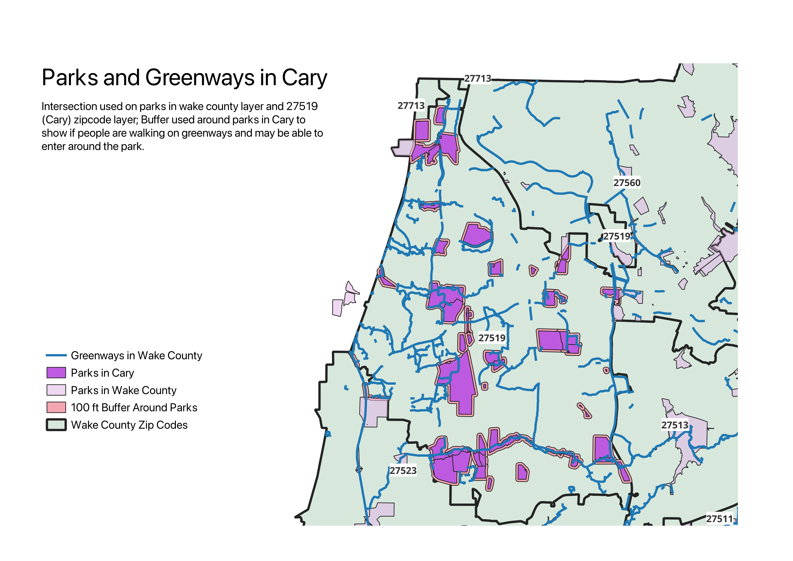

GEOG 370 HW 8 by Sarah Masters

This map shows parks in Cary, with a 100 foot buffer around them, and the greenways in Cary. I selected just the zipcode I'm from
from the layer of all zipcodes in Wake County, and then did an intersection with that layer and the layer with all parks in
Wake County. This gave me the parks just in Cary. I then did a buffer of 100 feet around the parks in Cary to show if any of the
greenways go near there where people can enter the parks.
Wake County Zip Codes Data
Parks in Wake County
Greenways in Wake County